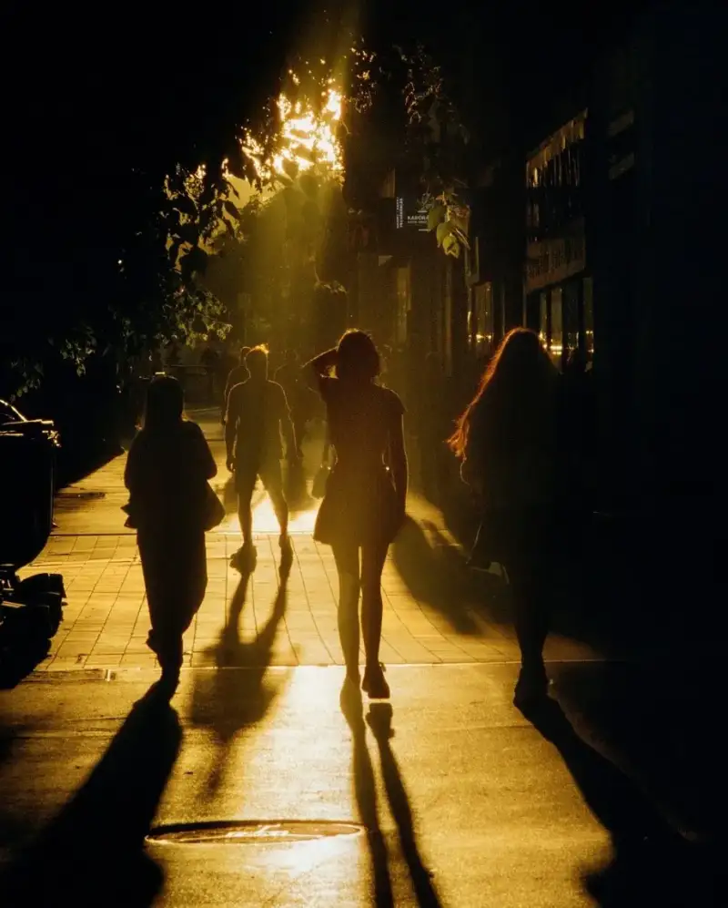
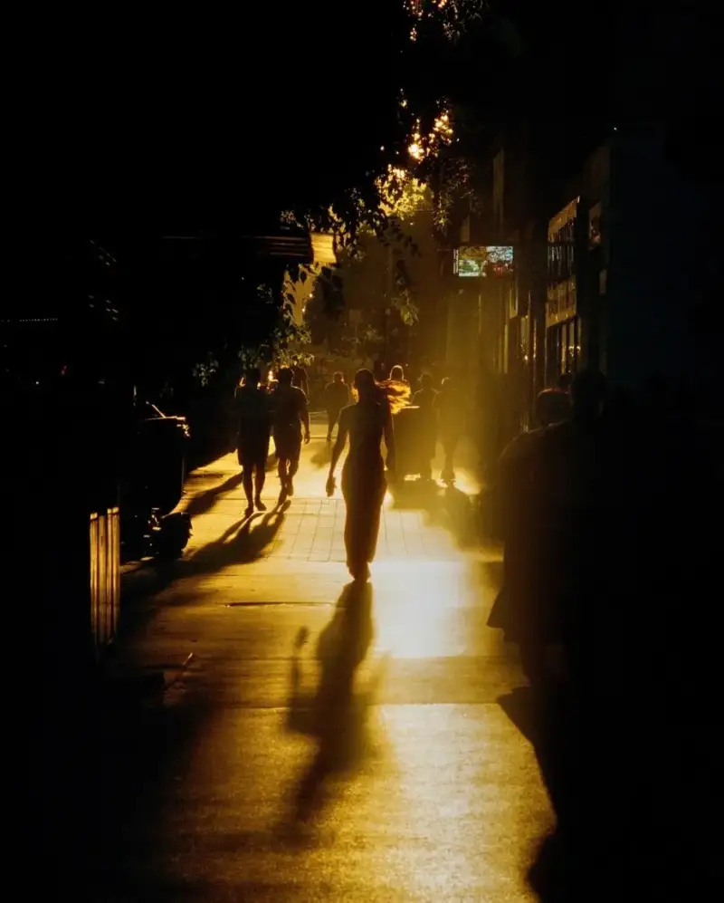
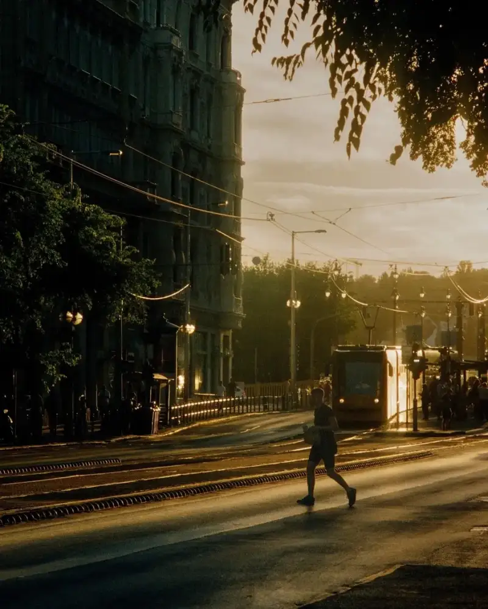
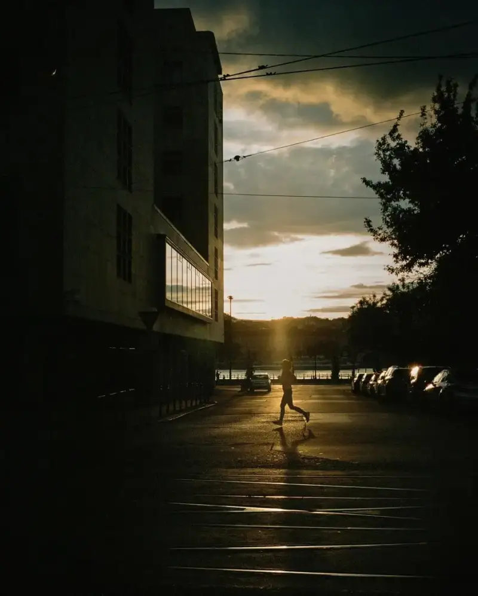
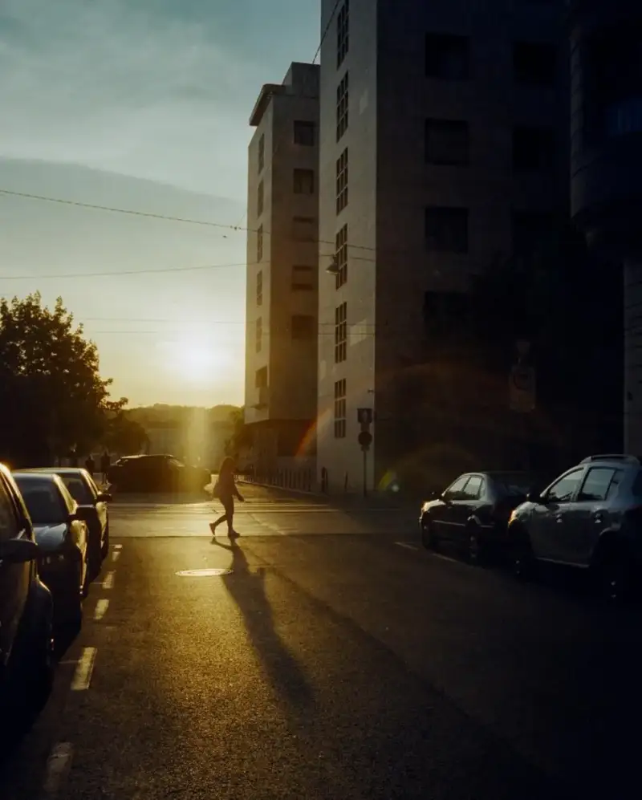

Photographer Peter Varsics stands out in photography with his unique film images. His work captures light, shadow, color, and emotion with depth. He is especially good at showing the romantic mood of city streets.




